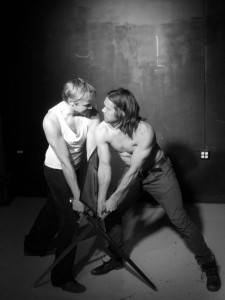

Sverdteknikk - 3 dager
- Dato:
- 24.04.2013 til 26.04.2013
- Start kl :
- 17:00
- Slutt kl :
- 20:00
- Pris:
- 700,-
- Adresse:
- Norsk Skuespillersenter, Welhavensgate 1, Oslo
 Lær grunnleggende sverdteknikk, eller frisk opp gamle kunnskaper!
{kind=link}
Dette er et eksklusivt, praktisk kurs for få deltakere, med tett, personlig oppfølging. Kurset går over 3 dager med 3-timers intensive økter. Fokus: Å innarbeide en grunnelggende forståelse for sverdteknikk gjennom å lære en kort koreografi. Arbeidet vil resultere i en uformell visning siste dag, hvor kursdeltagerne ser på hverandres arbeid.
Dag 1
30 minutter oppvarming
1 t. BLOOD-sikkerhetskurs for scenekamp
1 t. fotarbeid, parreringsposisjoner
30 minutter partnerarbeid på angrep/parrering
Dag 2
30 minutter oppvarming
2t koreografi- og teknikkbygging
30 minutter oppsummering, visning
Dag 3
30 minutter oppvarming
1.5t koreografi- og teknikkbygging
1t visning, full koreografi + oppsummering av kurset
Kurset ledes av Sveinung Oppegaard og Brage Bang.
Sveinung Oppegaard er utdannet skuespiller ved Rose Bruford College i London hvor han ble uteksaminert i scenekamp med "Gold Standard". I løpet av denne perioden fikk han trening i neve, stokk, bredsverd, sverd med lite skjold og korde med dolk.
Brage Bang tok skuespillerutdanning ved Rose Bruford College i England, og fikk der også scenekampsertifikasjon i det engelske BADC-systemet. Etter utdanning assisterte han under Fight Master Marcello Marascalci ved kampundervisningen på Rose Bruford College og ALRA i London. I Norge har han undervist i scenekamp ved NISS og flere frigrupper, vært kampkoreograf på forestilling "Gyntiana" på Vardeteatret, "Macbeth" på Caféteatret, "Zero" på Teater Manu, rådgiver på flere prosjekter, og kampsportartist ved Den Norske Operas oppsetning av David McVicar's Aida.
Pris for medlemmer av NSF: 600,-